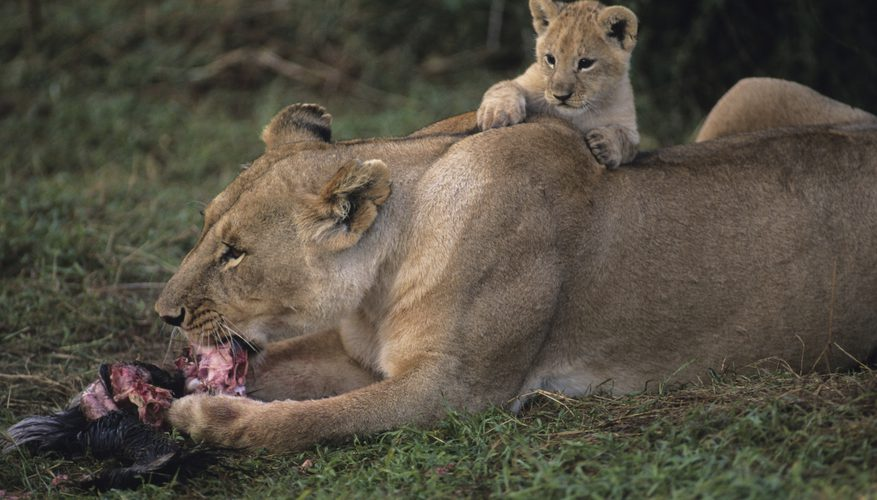

Lion cubs nurse for approximately six months, but will begin eating meat at three months. They will nurse at any vacant teat--including at a teat that is not their mother's if the other female will allow it--unlike leopard cubs, which nurse from the same teat on the same mother every time. Baby lions get the last pickings from a kill and do not begin to hunt for themselves until they reach one year of age. Due to threats from starvation, predators and male lions, up to 80 percent of baby lions die within the first two years.